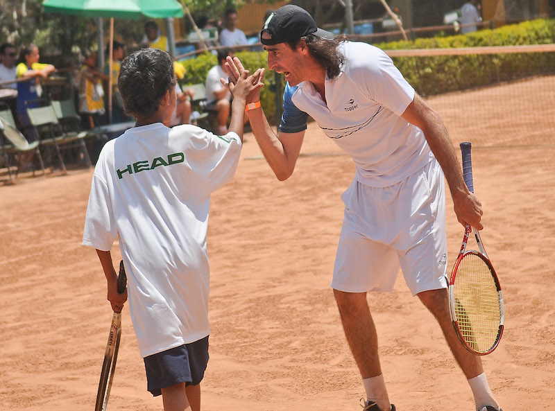
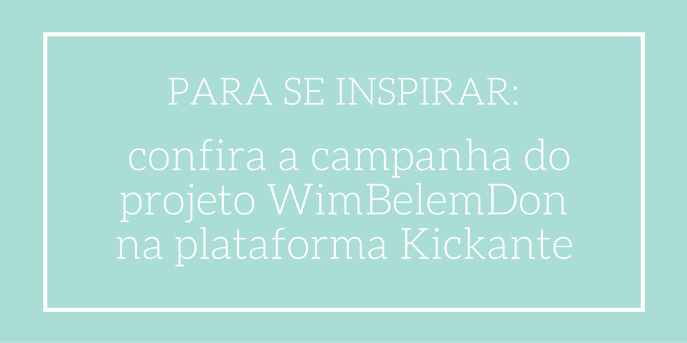
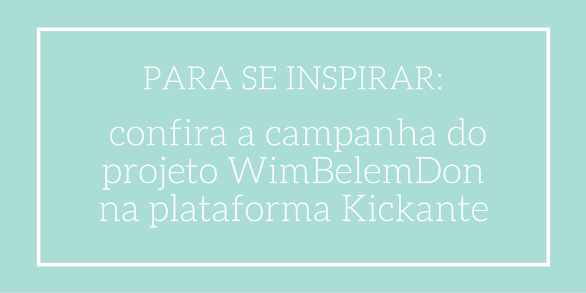

Organização de Porto Alegre financia sua própria sede por meio de Crowdfunding
08 de Agosto de 2016 às 14:27
Na 8ª edição do Festival ABCR – Associação Brasileira de Captadores de Recursos, que aconteceu em maio deste ano, a STEPS – Sociedade, Tênis, Educação e Participação Social, por meio de seu projeto WimBelemDon, foi vencedora na categoria Organização do Ano. Conheça sua história e INSPIRE-SE
Sediada na região sul do Brasil, ao longo de seus 16 anos de trajetória, a STEPS – Sociedade, Tênis, Educação e Participação Social passou por desafios que possivelmente você conseguirá identificar em sua própria organização. Criada em outubro de 2000, a STEPS é uma Organização da Sociedade Civil (OSC) sem fins lucrativos, que tem por objetivo promover a inclusão de crianças e adolescentes em situação de vulnerabilidade social, através do projeto WimBelemDon.
O trocadilho que dá nome ao projeto faz referência ao torneio de tênis mais antigo e famoso do mundo: Wimbledon, que acontece no Reino Unido e foi criado em 1877; e ao nome do bairro onde está localizada a STEPS: Belém Novo. Promovendo o esporte – mais especificamente o tênis – como uma boa desculpa para proporcionar um espaço de transformação individual e social de crianças e adolescentes e de suas famílias, em torno de 100 crianças são convidadas a participar de oficinas de tênis, grupos de psicologia, laboratórios de aprendizagem, oficinas culturais de artes e cinema e práticas de bem-estar.
Isso tudo significa que “através do ensino do tênis, integrado à leitura e à complementação scolar”, a STEPS quer facilitar o desenvolvimento de habilidades e atitudes em crianças em situação de risco social “que hes permitam participar ativamente da sociedade brasileira”, segundo texto publicado pela própria em suacampanha de crowdfunding (ou financiamento coletivo) na plataforma Kickante.

A organização é localizada na região extremo-sul de Porto Alegre, onde há um vazio de espaços de proteção à infância e juventude e existe uma problemática social complexa: das 17 regiões escaladas para estudo do Observatório da Cidade de Porto Alegre, a região extremo-sul ocupa a 13ª posição, estando entre as 5 piores neste aspecto. “Acreditamos que a nossa instituição é uma das possibilidades de mudarmos essa realidade, com ações promovidas com vistas ao protagonismo, na busca e construção de alternativas à inclusão social, a reestruturação familiar, a garantia de direitos, a construção de uma consciência crítica e ao exercício da cidadania”, explica Marcelo Ruschel da Costa*, fundador e superintendente da STEPS.
Como tudo aconteceu
“Quando anunciaram o prêmio [ABCR 2016] eu brinquei que era merecido porque, em qualquer outro ano, provavelmente, a gente não mereceria, mas 2015 foi inacreditável”, compartilha Costa. Isso se dá porque no ano passado, diante da possibilidade de perder a sede onde funcionou durante todos esses anos, a organização experimentou uma maneira criativa e efetiva de captação de recursos. “Iniciamos 2015 com o fantasma do despejo, pois o terreno onde fica a sede da STEPS/Projeto WimBelemDon, o qual pagávamos aluguel por 15 anos, iria ser vendido pelos proprietários”, conta.
Costa explica que a receita da STEPS provém, principalmente, de Leis de Incentivo Fiscal, como a Lei do Esporte, do Ministério do Esporte e lei do FUNCRIANÇA. “Estas leis não permitem aquisição de bens imóveis, portanto, não tínhamos outra alternativa, a não ser buscar doações diretas”. Foi assim que nasceu a campanha Fixando Raízes WimBelemDon!.
Com início em fevereiro de 2015 e, apesar das contribuições pontuais de dezenas pessoas e organizações, apenas Marcelo Costa efetivamente à frente da produção, a STEPS se lançou ao esforço de mobilização e engajamento de doadores, que durou 109 dias, até 31 de maio do mesmo ano. Costa compartilha: “O valor pretendido pelos proprietários do terreno se aproximava de R$ 400.000,00 e isto nos dava uma noção da dificuldade que enfrentaríamos e do quanto teríamos que trabalhar e ter criatividade para alcançar êxito em nossa campanha.”
Fazendo uso da transparência e linguagem simples em todos os materiais de divulgação da ação, a STEPS também se preocupou em publicar todo o conteúdo traduzido para o inglês. Além disso, “como o sistema de crowdfunding utiliza recompensas para incentivar os doadores a doarem mais do que pretendiam, nos esforçamos para criar uma gama de recompensas que começavam em R$ 15,00 e iam até R$ 48.000,00. Nossa criatividade não teve limite nas recompensas”, conta Costa.
Diferencial a médio prazo
Nesse ponto, a organização foi muito assertiva, afinal, na hora de criar uma campanha como essa é importante ter em mente as possibilidades de motivação para a doação. Há quem se sensibilize fortemente com a causa, mas tem também quem irá doar por conta das recompensas oferecidas. É por isso que Costa e sua equipe foram atrás de produtos que se relacionassem com o público doador e o retorno foi surpreendentemente positivo: “Além de conseguirmos mais de 200 livros do nosso embaixador [o tenista] Fernando ‘Fino’ Meligeni, Gustavo ‘Guga’ Kuerten também doou mais de 200 exemplares de seu livro recém-lançado – todos autografados.”
Tenistas de renome internacional como o espanhol Rafael Nadal, o britânico Andy Murray, o uruguaio Pablo Cuevas, além dos maiores recordistas do tênis jogado em duplas, os gêmeos norte-americanos Mike e Bob Bryan também se envolveram na campanha. Costa conta que “só como exemplo, Nadal doou 3 raquetes e 3 camisas de jogo, todas autografadas. Revertidas em recompensas, significaram R$ 90.000,00 em doação à campanha.”
Fortemente motivada pela necessidade de manter sua sede e continuar o trabalho desenvolvido com o WimBelemDon, a STEPS foi além de seus próprios limites e alcançou um retorno de 1.174 doadores únicos que, somados, chegaram à quantia líquida de R$ 491.983,20 em doações – um case significativo de sucesso para uma organização do bairro de Belém Novo, e que, até então, não era muito conhecida nem mesmo em seu próprio estado. “As dezenas de reportagens em jornais, revistas, rádios, TVs e sites elevaram nossa imagem no país”, conta Costa.
Você pode fazer o mesmo
Ao compartilhar sua experiência, ele também deixa uma dica: “Acreditamos que nossa campanha não foi nem inovadora, nem diferente das demais. Apenas aquela sensação de missão impossível nos deu mais garra para alcançarmos nosso objetivo. Creditamos também ao fato de uma gama tão grande de recompensas a partir dos R$ 15,00, conseguindo atender a todo tipo de doador.”
Segundo ele, aliás, “é importante trocar o pneu com o carro andando, isto é, no meio do caminho, ir reconhecendo o que dá certo ou errado e ir adaptando as recompensas. Nós fomos fazendo tudo durante a campanha”.
Seguindo esse caminho, em 30 de junho de 2015, Marcelo Costa assinou, em cartório, uma escritura pública que encaminha oficialmente a aquisição do terreno à STEPS. “Assim como na nossa visão diz ‘que toda criança tenha um sonho e a capacidade de buscá-lo’, alcançamos nosso objetivo provando que todo sonho é possível, sim, de ser alcançado”.
Esta organização foi vencedora do Prêmio ABCR 2016 na categoria Organização do Ano.
Saiba mais sobre a premiação.
*Confira a dica de Marcelo Ruschel para campanhas de captação de recursos de sucesso
Por Ana Luíza Vastag, da Escola de Notícias
Sediada na região sul do Brasil, ao longo de seus 16 anos de trajetória, a STEPS – Sociedade, Tênis, Educação e Participação Social passou por desafios que possivelmente você conseguirá identificar em sua própria organização. Criada em outubro de 2000, a STEPS é uma Organização da Sociedade Civil (OSC) sem fins lucrativos, que tem por objetivo promover a inclusão de crianças e adolescentes em situação de vulnerabilidade social, através do projeto WimBelemDon.
O trocadilho que dá nome ao projeto faz referência ao torneio de tênis mais antigo e famoso do mundo: Wimbledon, que acontece no Reino Unido e foi criado em 1877; e ao nome do bairro onde está localizada a STEPS: Belém Novo. Promovendo o esporte – mais especificamente o tênis – como uma boa desculpa para proporcionar um espaço de transformação individual e social de crianças e adolescentes e de suas famílias, em torno de 100 crianças são convidadas a participar de oficinas de tênis, grupos de psicologia, laboratórios de aprendizagem, oficinas culturais de artes e cinema e práticas de bem-estar.
Isso tudo significa que “através do ensino do tênis, integrado à leitura e à complementação scolar”, a STEPS quer facilitar o desenvolvimento de habilidades e atitudes em crianças em situação de risco social “que hes permitam participar ativamente da sociedade brasileira”, segundo texto publicado pela própria em suacampanha de crowdfunding (ou financiamento coletivo) na plataforma Kickante.

A organização é localizada na região extremo-sul de Porto Alegre, onde há um vazio de espaços de proteção à infância e juventude e existe uma problemática social complexa: das 17 regiões escaladas para estudo do Observatório da Cidade de Porto Alegre, a região extremo-sul ocupa a 13ª posição, estando entre as 5 piores neste aspecto. “Acreditamos que a nossa instituição é uma das possibilidades de mudarmos essa realidade, com ações promovidas com vistas ao protagonismo, na busca e construção de alternativas à inclusão social, a reestruturação familiar, a garantia de direitos, a construção de uma consciência crítica e ao exercício da cidadania”, explica Marcelo Ruschel da Costa*, fundador e superintendente da STEPS.
Como tudo aconteceu
“Quando anunciaram o prêmio [ABCR 2016] eu brinquei que era merecido porque, em qualquer outro ano, provavelmente, a gente não mereceria, mas 2015 foi inacreditável”, compartilha Costa. Isso se dá porque no ano passado, diante da possibilidade de perder a sede onde funcionou durante todos esses anos, a organização experimentou uma maneira criativa e efetiva de captação de recursos. “Iniciamos 2015 com o fantasma do despejo, pois o terreno onde fica a sede da STEPS/Projeto WimBelemDon, o qual pagávamos aluguel por 15 anos, iria ser vendido pelos proprietários”, conta.
Costa explica que a receita da STEPS provém, principalmente, de Leis de Incentivo Fiscal, como a Lei do Esporte, do Ministério do Esporte e lei do FUNCRIANÇA. “Estas leis não permitem aquisição de bens imóveis, portanto, não tínhamos outra alternativa, a não ser buscar doações diretas”. Foi assim que nasceu a campanha Fixando Raízes WimBelemDon!.
Com início em fevereiro de 2015 e, apesar das contribuições pontuais de dezenas pessoas e organizações, apenas Marcelo Costa efetivamente à frente da produção, a STEPS se lançou ao esforço de mobilização e engajamento de doadores, que durou 109 dias, até 31 de maio do mesmo ano. Costa compartilha: “O valor pretendido pelos proprietários do terreno se aproximava de R$ 400.000,00 e isto nos dava uma noção da dificuldade que enfrentaríamos e do quanto teríamos que trabalhar e ter criatividade para alcançar êxito em nossa campanha.”
Fazendo uso da transparência e linguagem simples em todos os materiais de divulgação da ação, a STEPS também se preocupou em publicar todo o conteúdo traduzido para o inglês. Além disso, “como o sistema de crowdfunding utiliza recompensas para incentivar os doadores a doarem mais do que pretendiam, nos esforçamos para criar uma gama de recompensas que começavam em R$ 15,00 e iam até R$ 48.000,00. Nossa criatividade não teve limite nas recompensas”, conta Costa.
Diferencial a médio prazo
Nesse ponto, a organização foi muito assertiva, afinal, na hora de criar uma campanha como essa é importante ter em mente as possibilidades de motivação para a doação. Há quem se sensibilize fortemente com a causa, mas tem também quem irá doar por conta das recompensas oferecidas. É por isso que Costa e sua equipe foram atrás de produtos que se relacionassem com o público doador e o retorno foi surpreendentemente positivo: “Além de conseguirmos mais de 200 livros do nosso embaixador [o tenista] Fernando ‘Fino’ Meligeni, Gustavo ‘Guga’ Kuerten também doou mais de 200 exemplares de seu livro recém-lançado – todos autografados.”
Tenistas de renome internacional como o espanhol Rafael Nadal, o britânico Andy Murray, o uruguaio Pablo Cuevas, além dos maiores recordistas do tênis jogado em duplas, os gêmeos norte-americanos Mike e Bob Bryan também se envolveram na campanha. Costa conta que “só como exemplo, Nadal doou 3 raquetes e 3 camisas de jogo, todas autografadas. Revertidas em recompensas, significaram R$ 90.000,00 em doação à campanha.”
Fortemente motivada pela necessidade de manter sua sede e continuar o trabalho desenvolvido com o WimBelemDon, a STEPS foi além de seus próprios limites e alcançou um retorno de 1.174 doadores únicos que, somados, chegaram à quantia líquida de R$ 491.983,20 em doações – um case significativo de sucesso para uma organização do bairro de Belém Novo, e que, até então, não era muito conhecida nem mesmo em seu próprio estado. “As dezenas de reportagens em jornais, revistas, rádios, TVs e sites elevaram nossa imagem no país”, conta Costa.
Você pode fazer o mesmo
Ao compartilhar sua experiência, ele também deixa uma dica: “Acreditamos que nossa campanha não foi nem inovadora, nem diferente das demais. Apenas aquela sensação de missão impossível nos deu mais garra para alcançarmos nosso objetivo. Creditamos também ao fato de uma gama tão grande de recompensas a partir dos R$ 15,00, conseguindo atender a todo tipo de doador.”
Segundo ele, aliás, “é importante trocar o pneu com o carro andando, isto é, no meio do caminho, ir reconhecendo o que dá certo ou errado e ir adaptando as recompensas. Nós fomos fazendo tudo durante a campanha”.
Seguindo esse caminho, em 30 de junho de 2015, Marcelo Costa assinou, em cartório, uma escritura pública que encaminha oficialmente a aquisição do terreno à STEPS. “Assim como na nossa visão diz ‘que toda criança tenha um sonho e a capacidade de buscá-lo’, alcançamos nosso objetivo provando que todo sonho é possível, sim, de ser alcançado”.
Esta organização foi vencedora do Prêmio ABCR 2016 na categoria Organização do Ano.
Saiba mais sobre a premiação.
*Confira a dica de Marcelo Ruschel para campanhas de captação de recursos de sucesso
Por Ana Luíza Vastag, da Escola de Notícias
Notícias mais populares
Gestão
Em agosto de 2017, a revista ÉPOCA e o Instituto Doar divulgaram a primeira ediç&...
Contexto e tendências
Criado para tornar mais transparentes as parcerias entre a administração públic...
Profissional captador
A captação de recursos é fundamental para a sustentabilidade de uma organiza&cc...